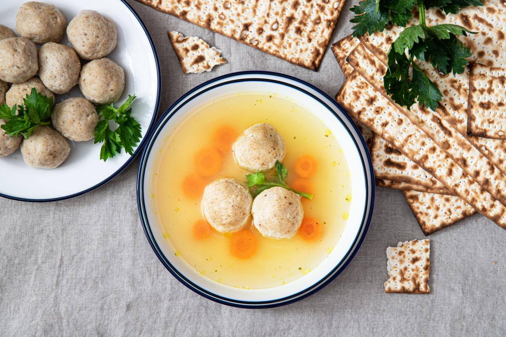

מצרכים:
- בצל
- רבע כוס שמן
- 2 ביצים
- 2 כוסות קמח מצה
- מלח לפי הטעם
אופן ההכנה:
-
מטגנים בצל בשמן עד שהוא מזהיב ומתרכך.
-
טורפים 2 ביצים עם מעט מלח ומוסיפים את הבצל.
-
מוסיפים בהדרגה את קמח המצה ומערבבים היטב.
-
מכסים את הקערה ונותנים לתערובת לנוח כשעה.
-
מרתיחים מים עם מעט מלח בסיר גדול.
-
יוצרים כדורים מהעיסה ומבשלים כחצי שעה.
ככה זה נראה מוכן 😍
